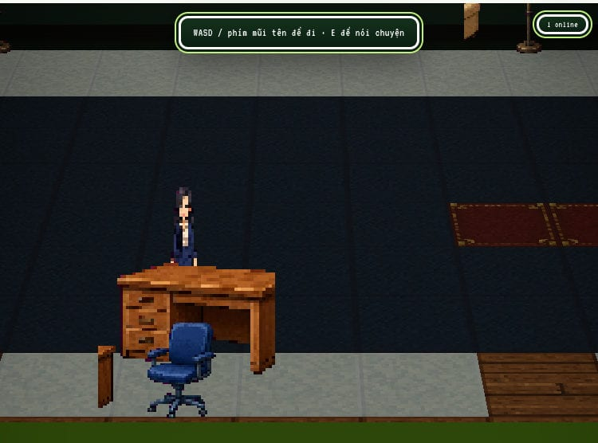
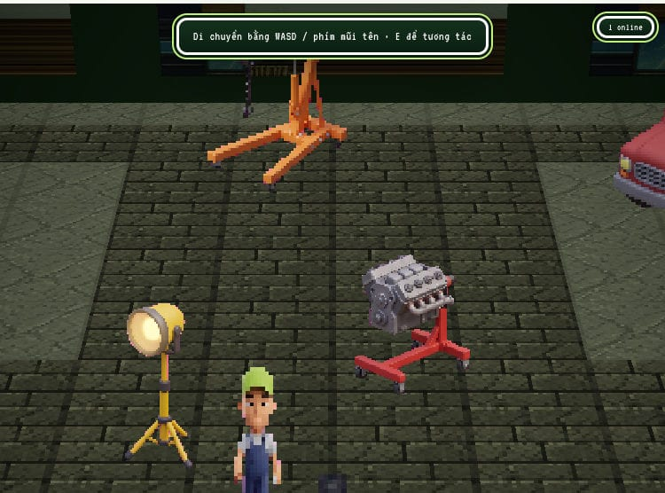
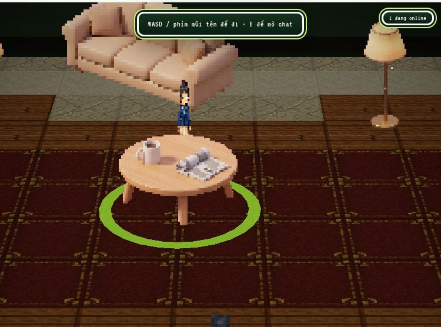

Customer
/officeAnh Minh — the happy path. High score, VETC-active, complete profile, about 21 days to expiry.
TASCO // BeyondPilot — GenAI Fund
Compulsory motor insurance renewal, rebuilt as a journey a driver can actually finish — scored, consented and completed in a chat, at the VETC counter, or on foot inside a walkable virtual office.
No sign-up · passwordless persona login · synthetic data throughout
The renewal pipeline
Not a storyboard. These are the real case states the app persists,
transitions and counts — src/lib/workflow/renewal.ts defines
the moves, /admin/workflow draws them live, and the funnel
reads them back.
scored
Risk tier and renewal window open automatically.
reminded
The campaign skips anyone without consent, and logs why.
engaged
The driver starts — on whichever channel they chose.
confirmed
Vehicle plate and make confirmed by the customer, never guessed.
paid
Regulated premium, priced from the tariff. Never discounted.
issued
Certificate written, QR verifiable at its own public URL.
Six roles, six screens
Sign in passwordless as any persona. Routes, data and PII masking all follow from the role, so the telesales console genuinely cannot show what compliance is allowed to read.
Customer
/officeAnh Minh — the happy path. High score, VETC-active, complete profile, about 21 days to expiry.
Customer (voice)
/call/…Chị Lan — ignores chat entirely, calls instead, and asks for a human. The handover path exists because of her.
Telesales
/agentHandover queue, reveal phone number with a recorded reason, send the renewal link. Cannot issue a certificate — the customer finishes it.
Campaign manager
/opsScores the base, runs the consent-gated campaign, reads the funnel and watches exclusions accumulate.
Compliance
/complianceConsent ledger plus an append-only audit trail. Read-only by design — nothing here can be edited, only read.
Admin
/adminLLM providers, RBAC overrides, and the workflow map — the view built for the people evaluating this.
Three walkable rooms
Real-time renders, real presence. Open a second browser tab as another persona and you will see them standing in the room with you.

HD-2D floor with reception, customer service, claims, the admin board and a VETC kiosk.
walk in →
Two service bays on lifts, an inspection pad and a claims desk for the physical side of a claim.
walk in →
The Zalo-style room. Lounge chat is moderated, and every other visitor in the scene is rendered live.
walk in →For whoever is judging this
This is the sequence that tells the whole story. Every step works with no API keys configured.
01
Campaign manager → /ops
Run the renewal campaign. Watch non-consenting customers drop out and the exclusion count tick up.
02
Anh Minh → Virtual Office
Walk to the customer-service desk, confirm the vehicle, pay, then open the issued certificate and its QR page.
03
Chị Lan → voice
She ignores chat and calls. Say “nhân viên” and the app hands the conversation to a human instead of looping.
04
Telesales → /agent
Open the handover, reveal the phone number with a reason attached, and send the renewal link.
05
Admin → /admin/workflow
The workflow map, drawn from the same transition table the product runs on.
Read this before you judge
A prototype that oversells itself is worth less than one that is honest about its seams. Here is exactly where the line sits.
Genuinely implemented
real logic, real state
Deliberately simulated
labelled in the UI
Under the hood
The whole app is a single Next.js project under demo/. Add
a provider key and the agent switches from scripted replies to a live
model with no other change.
The team
A BeyondPilot × Tasco prototype for the GenAI Fund. The demo, the 3D worlds, and the documentation all live in this repository.
Indra Cahyadi
linkedin.com/in/eendra